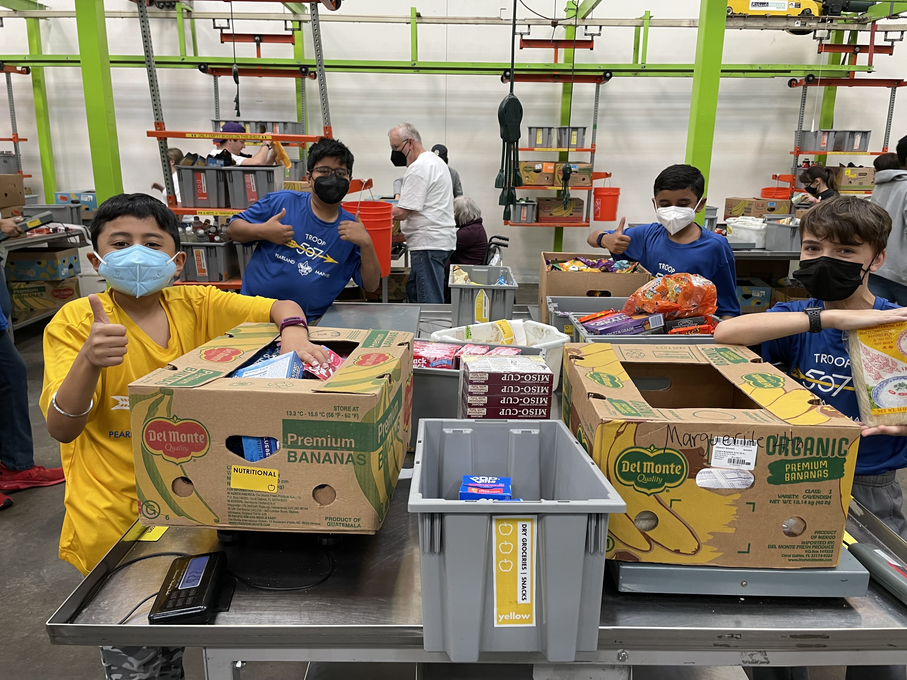
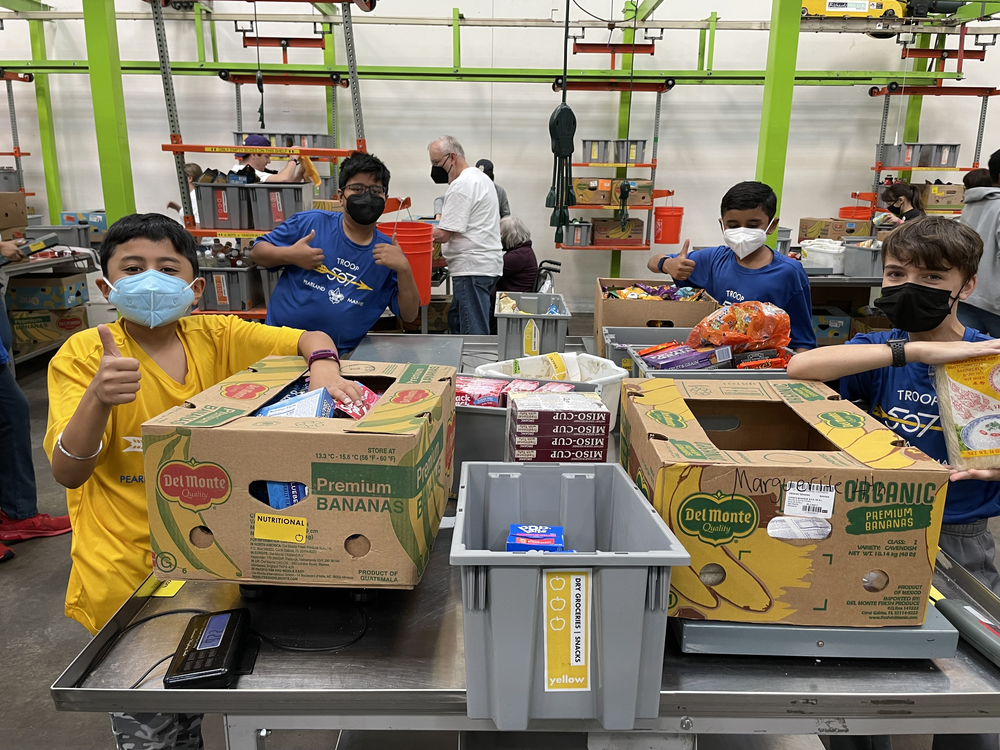

Scouting
I joined Boy Scouts Troop 507 in August 2021 as a rising 6th grader and have enjoyed it from the very first day. I am a First Class scout working towards my Star rank. Scouting has taught me how to be prepared for any situation, life skills that are useful when camping, and much more. Last semester, I was elected as a patrol leader and was able to gain valuable leadership experiences. I led my patrol on nature walks, planned fun patrol meetings, and completed useful scouting requirements with them.
I am very active in my community and have volunteered with my troop and individually at the Houston Food Bank and fundraisers for brain cancer research, like Head for the Cure. At the Houston Food Bank, we sort donations, provide meals for Senior Citizens, and pack lunches for underprivileged kids.
 
